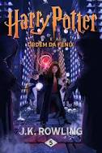
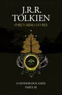
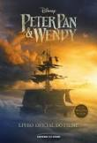
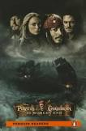

Harry Potter e a Ordem da Fênix

Sinopse
Parece impossível, mas, no bairro mais Muggle do mundo Muggle, Harry é emboscado por Dementors! Para salvar a sua vida e a do primo Dudley, Harry não tem outra hipótese senão usar magia - mesmo sabendo que isso significará a sua expulsão mais que certa de Hogwarts. Enquanto o Ministério da Magia continua a não acreditar que o terrível Senhor das Trevas está de volta, Voldemort e os seus fiéis Devoradores da Morte já começaram a preparar o seu regresso ao poder. Porém, há uma nova esperança: uma antiga ordem secreta, da qual os pais de Harry fizeram parte, voltou a organizar-se e Dumbledore está atento.
Fonte: Google Books
| Data |
Autor |
Idioma Original |
Gêneros |
Número de páginas |
Editora |
|
21 de junho de 2003 |
J.K. Rowling |
Inglês |
Romance, Ficção juvenil, Literatura fantástica |
750 |
Pottermore Publishing |
Alice no país das maravilhas

Sinopse
A garota Alice vê um coelho branco entrar em uma toca. Vai atrás dele e chega ao País das Maravilhas. Ela muda de tamanho muitas vezes e conhece criaturas esquisitas, como a Lagarta, a Duquesa, o Gato de Cheshire, a Lebre de Março, o Chapeleiro Maluco e o Rei e a Rainha de Copas. Tradução de Ligia Cademartori para o clássico de Lewis Carroll.
Fonte: Google Books
| Data |
Autor |
Idioma Original |
Gêneros |
Número de páginas |
Editora |
| 2010 |
Lewis Carroll |
Inglês |
Literatura infantil, Literatura fantástica, Ficção Absurdista, Fantástico |
112 |
FTD Educação |
O senhor dos Anéis: O retorno do rei

Sinopse
O Retorno do Rei A guerra entre os Povos Livres da Terra-média e Sauron, o Senhor Sombrio da terra de Mordor, chega a seu clímax neste terceiro volume do romance O Senhor dos Anéis. As batalhas grandiosas que estão prestes a acontecer, no entanto, são apenas o pano de fundo para o verdadeiro drama: a missão quase suicida dos hobbits Frodo e Sam, que tentam destruir o Um Anel, fonte do poder de Sauron, infiltrando-se no coração do território do Inimigo. Em O Retorno do Rei, acompanhamos o mago Gandalf e o hobbit Pippin em sua visita à a majestosa cidade de Minas Tirith, que já foi o principal baluarte dos Homens contra a ameaça de Sauron, mas que está prestes a sucumbir diante da força avassaladora do Senhor Sombrio. Outros membros da Sociedade do Anel se juntam a Aragorn, herdeiro da longa linhagem dos reis de Minas Tirith, na tentativa de evitar que a antiga capital do reino de Gondor seja destruída. Nas fronteiras de Mordor, Sam resgata Frodo, e os dois hobbits partem para o último estágio de sua jornada rumo ao Monte da Perdição, uma jornada que testará os limites do corpo e da mente dos pequenos heróis. O livro inclui ainda numerosos apêndices, nos quais Tolkien explora detalhes da história, das línguas, dos alfabetos e até dos calendários de seu mundo ficcional..
Fonte: Google Books
| Data |
Autor |
Idioma Original |
Gêneros |
Número de páginas |
Editora |
| 25 de novembro de 2019 |
J.R.R. Tolkien |
Inglês |
Fantasia, Literatura fantástica |
528 |
HarperCollins Brasil |
Peter Pan & Wendy: livro oficial do filme

Sinopse
Wendy Darling não tem certeza se está pronta para crescer. Crescer significa que acabaram suas noites no quarto das crianças, compartilhando histórias sobre o heroico Peter Pan com seus irmãos mais novos, João e Miguel. Então, para a surpresa de Wendy, o próprio Peter Pan aparece, ao lado de sua companheira, a fada Tinker Bell — e a dupla leva as crianças para a Terra do Nunca, um lugar mágico onde ninguém precisa crescer. Ao chegarem à Terra do Nunca, as crianças mergulham de cabeça em uma aventura, encontrando o rival de Peter, o Capitão Gancho, e sua perigosa tripulação pirata. Mas, enquanto eles se juntam aos leais Meninos Perdidos de Peter e à poderosa Tigrinha para equilibrar a batalha de inteligência e de espadas contra Gancho, Wendy se pergunta se há mais por trás da história de Peter — e de crescer — do que ela imaginava… e se descobrir esses segredos pode ser a chave para salvar a Terra do Nunca e se encontrar. Esta emocionante adaptação em livro do live-action Peter Pan & Wendy também inclui fotos do filme!
Fonte: Google Books
| Data |
Autor |
Idioma Original |
Gêneros |
Número de páginas |
Editora |
| 15 de março de 2023 |
Elizabeth Rudnick |
Português |
Fantasia, Literatura fantástica |
136 |
Universo dos Livros Editora |
Pirates of the Caribbean At World's End

Sinopse
Amazon.com Pirates of the Caribbean: At World's End is a rollicking voyage in the same spirit of the two earlier Pirates films, yet far darker in spots (and nearly three hours to boot). The action, largely revolving around a pirate alliance against the ruthless East India Trading Company, doesn't disappoint, though the violence is probably too harsh for young children. Through it all, the plucky cast (Keira Knightley, Orlando Bloom, Geoffrey Rush) are buffeted by battle, maelstroms, betrayal, treachery, a ferocious Caribbean weather goddess, and that gnarly voyage back from the world's end--but with their wit intact. As always, Johnny Depp's Jack Sparrow tosses off great lines ; he chastises "a woman scorned, like which hell hath no fury than!" He insults an opponent with a string of epithets, ending in "yeasty codpiece."! In the previous Dead Man's Chest, Sparrow was killed--sent to Davy Jones' Locker. In the opening scenes, the viewer sees that death has not been kind to Sparrow--but that's not to say he hasn't found endless ways to amuse himself, cavorting with dozens of hallucinated versions of himself on the deck of the Black Pearl. But Sparrow is needed in this world, so a daring rescue brings him back. Keith Richards' much ballyhooed appearance as Jack's dad is little more than a cameo, though he does play a wistful guitar. But the action, as always, is more than satisfying, held together by Depp, who, outsmarting the far-better-armed British yet again, causes a bewigged commander to muse: "Do you think he plans it all out, or just makes it up as he goes along?"
Fonte: Google Books
| Data |
Autor |
Idioma Original |
Gêneros |
Número de páginas |
Editora |
| 2009 |
Ted Elliott, Terry Rossio |
Inglês |
Ficção de aventura |
56 |
Pearson Education |